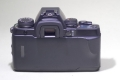

最后手动2010-04-13 18:474.58 分
操作性 5.00功能性 4.50美观性 5.00趣味性 4.50耐用性 4.50性价比 4.00
暗号2008-12-22 22:534.25 分
操作性 4.50功能性 4.50美观性 4.00趣味性 4.50耐用性 4.50性价比 3.50

迅2008-11-21 13:124.5 分
操作性 4.00功能性 5.00美观性 5.00趣味性 4.00耐用性 4.00性价比 5.00
VREDIF2008-05-03 23:314.17 分
操作性 4.00功能性 4.50美观性 5.00趣味性 4.00耐用性 4.00性价比 3.50
QDFISH2008-01-14 14:394.42 分
操作性 4.50功能性 4.50美观性 4.50趣味性 4.00耐用性 5.00性价比 4.00
我爱器材胜一切2007-07-23 20:594.33 分
操作性 4.00功能性 5.00美观性 4.00趣味性 4.00耐用性 4.50性价比 4.50
RX22006-08-16 14:574.67 分
操作性 5.00功能性 4.50美观性 5.00趣味性 4.00耐用性 4.50性价比 5.00
F1.02006-04-23 00:564.42 分
操作性 5.00功能性 5.00美观性 5.00趣味性 4.00耐用性 4.00性价比 3.50
熊转悠注意2005-09-12 21:244.25 分
操作性 4.50功能性 4.50美观性 4.00趣味性 4.00耐用性 4.50性价比 4.00
benneli2005-03-30 14:514.67 分
操作性 5.00功能性 5.00美观性 5.00趣味性 5.00耐用性 4.00性价比 4.00